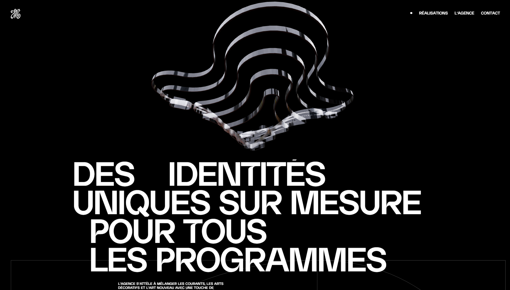

Jessica Mille Architecte
Creating a website for an architectural firm like Jessica Mille Architecte involves several key stages and addresses various technical and creative challenges. Here's how the studio might have approached this project:

Requirements Analysis and Preparation
- Client Discussion: The first step was to communicate with the Jessica Mille Architecte team to understand their brand, work style, target audience, and website functionality requirements. It was crucial to identify what features needed to be reflected on the site, such as project portfolios, a blog, contact information, etc.
- Market Research: Analyzing competitors and current trends in architectural website design helped determine best practices and unique approaches that could be used.

Concept and Prototype Development
- Creating Wireframes and Mockups: At this stage, draft layouts of the pages (wireframes) were developed to determine content placement, navigation, and user pathways. Then, high-fidelity mockups were created, taking into account branding and visual style.
- UI/UX Design: Given the need to emphasize the unique style of the architectural firm, particular attention was paid to a minimalist and modern design, with a focus on visual elements such as project images, photographs, and galleries.
- Client Design Approval: After presenting the mockups to the client and receiving their feedback, the design was refined and approved.

Development and Programming
- Frontend Development: The main task for frontend developers was to convert the approved mockups into interactive and responsive web pages. Special attention was paid to optimizing images and website loading speed.
- Backend Development: Depending on the chosen platform, the developers set up a content management system (CMS) for easy future updates. Functional modules like project galleries, a blog, and contact forms were also implemented.
- Testing: At this stage, the team conducted thorough testing of all site functions on various devices and browsers. This included checking for errors, ensuring proper display, and testing the site’s performance in real-world conditions.
Launch and Support
- Website Launch: After final testing, the site was deployed on the client's server or recommended hosting. Additional optimization was performed to improve performance and SEO.
- Client Training: The studio provided instructions and, if necessary, conducted training for the client’s team on managing the site, adding new content, and using the CMS.
- Technical Support and Maintenance: The studio continued to support the site, including regular system updates, performance monitoring, and adding new features as needed.